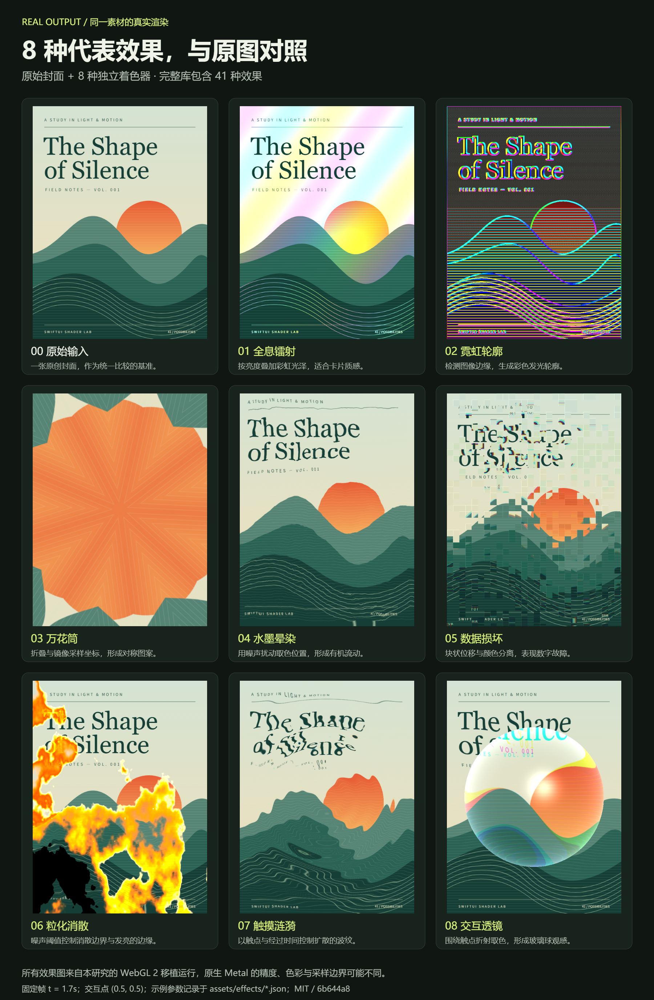

封面与海报
书籍 · 音乐专辑 · 电影海报
给选中的封面加轻微流光或呼吸起伏，突出当前内容，并营造与作品相符的氛围。
AN EXPLORATION OF LIGHT, TEXTURE & MOTION
SwiftUIShaders 为图片、文字和卡片提供 41 种 GPU 实时特效。输入已有视图与控制参数，输出会流动、变形或响应触摸的视图，适合封面、卡片和展示页主视觉。
最终输出是实时视图。当前画面可以截成图片；动效持续重绘，视频需要录制与编码。本网页另行实现了 WebGL 预览、素材上传、原图对比与 PNG 导出。
THE BIG PICTURE / 能力图解
第一张解释输入、GPU 处理原理、输出与应用方向；第二张对照原图和 8 种真实效果。点击图片可放大查看。


光泽随时间流动，试试调节右侧参数
WebGL 2 实时移植预览基于原始算法 · 跨渲染器可能存在精度与色彩差异 · 原生表现以 Metal 为准
8 种代表效果使用同一张封面、固定时间与参数。点击模块，在实验区继续调节。
PURPOSE & VALUE / 我们的理解
用较低的接入成本，让已有内容更有质感、动感和可玩性。
图片是最直观的使用对象，也能作用于文字、卡片和可渲染的 SwiftUI 组合视图。效果随时间流动，或跟随手指位置变化，让内容获得动态的视觉表现。
书籍 · 音乐专辑 · 电影海报
给选中的封面加轻微流光或呼吸起伏，突出当前内容，并营造与作品相符的氛围。
会员卡 · 收藏卡 · 成就徽章
用镭射反光、液态金属和触摸折射表现材质，增强珍藏感与不同等级的视觉区分。
产品介绍 · 活动页面 · 游戏界面
在主视觉或产品图片上使用水墨、故障等风格化效果，建立主题，让展示内容更有辨识度。
点击产生涟漪、完成时脉冲、移除时消散，让操作和视觉响应联系起来。创意编辑工具也可以直接开放效果选择与参数调节。
优先放在需要表现材质、突出内容或响应操作的位置。表单、表格和长文本阅读以清晰和效率为主，特效宜少量使用；大面积持续动画会增加 GPU 开销。留存或转化收益仍需产品实验验证。
原库面向 Apple 应用中的 SwiftUI 原生视图。本页是方便研究的 WebGL 移植展示，图片用于统一比较效果；图片上传和 PNG 导出是本展示页补充的功能。
THE COMPLETE COLLECTION
同一张图，观察每一种变换。选择卡片，在上方实验区继续探索。
没有匹配的特效。试试“涟漪”“intensity”或清空筛选。
UNDER THE SURFACE
SwiftUI 把视图交给 Metal，GPU 为每个输出像素重新计算颜色。改变取色位置，形成波浪与旋涡；组合颜色与噪声，形成镭射与流光。时间和触点，让它们产生变化。
上游有 37 个动画封装，其中「碎片散开」实际由 explode 参数控制，其余 36 个使用时间产生变化。
了解 Apple layerEffect ↗上游作者Kris Puckett
研究版本6b644a8 ↗
原生要求iOS 17+ / macOS 14+
开放许可MIT License ↗
展示实现41 个算法 · WebGL 2 移植
效果构成36 时间变化 / 3 静态或参数 / 2 交互